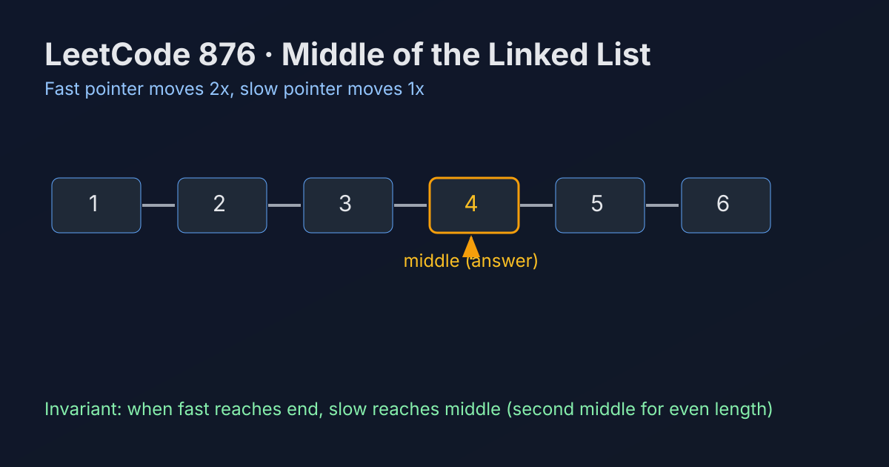

LeetCode 876: Middle of the Linked List (Fast/Slow Pointer Convergence)
LeetCode 876Linked ListTwo PointersToday we solve LeetCode 876 - Middle of the Linked List.
Source: https://leetcode.com/problems/middle-of-the-linked-list/

English
Problem Summary
Given the head of a singly linked list, return the middle node. If there are two middle nodes (even length), return the second middle node.
Key Insight
Move slow by 1 step and fast by 2 steps each round. When fast reaches the end, slow has moved exactly half the distance and lands at the required middle (second middle for even length).
Brute Force and Limitations
A straightforward approach is to first count list length n, then walk n/2 steps again from head. It works but needs two passes; fast/slow achieves this in one pass with the same O(1) extra space.
Optimal Algorithm Steps
1) Initialize slow=head, fast=head.
2) While fast != null and fast.next != null, advance slow=slow.next and fast=fast.next.next.
3) Loop ends when fast can no longer jump two steps.
4) Return slow.
Complexity Analysis
Time: O(n).
Space: O(1).
Common Pitfalls
- Returning the first middle in even-length lists (problem requires second middle).
- Writing loop condition as only fast != null, which may dereference fast.next unsafely.
- Accidentally moving both pointers by one step.
Reference Implementations (Java / Go / C++ / Python / JavaScript)
class Solution {
public ListNode middleNode(ListNode head) {
ListNode slow = head;
ListNode fast = head;
while (fast != null && fast.next != null) {
slow = slow.next;
fast = fast.next.next;
}
return slow;
}
}func middleNode(head *ListNode) *ListNode {
slow, fast := head, head
for fast != nil && fast.Next != nil {
slow = slow.Next
fast = fast.Next.Next
}
return slow
}class Solution {
public:
ListNode* middleNode(ListNode* head) {
ListNode* slow = head;
ListNode* fast = head;
while (fast != nullptr && fast->next != nullptr) {
slow = slow->next;
fast = fast->next->next;
}
return slow;
}
};class Solution:
def middleNode(self, head: Optional[ListNode]) -> Optional[ListNode]:
slow = fast = head
while fast and fast.next:
slow = slow.next
fast = fast.next.next
return slow/**
* @param {ListNode} head
* @return {ListNode}
*/
var middleNode = function(head) {
let slow = head, fast = head;
while (fast !== null && fast.next !== null) {
slow = slow.next;
fast = fast.next.next;
}
return slow;
};中文
题目概述
给定单链表头结点，返回链表的中间结点；若有两个中间结点（偶数长度），返回第二个中间结点。
核心思路
使用快慢指针：slow 每次走 1 步，fast 每次走 2 步。当前者到达中间附近时，后者恰好到达末尾，因此 slow 最终停在题目要求的位置（偶数时为第二个中点）。
暴力解法与不足
朴素做法是先遍历一遍统计长度 n，再从头走 n/2 步得到答案。该方法正确但要两次遍历；快慢指针可一次遍历完成，且额外空间同为 O(1)。
最优算法步骤
1）初始化 slow=head、fast=head。
2）当 fast != null 且 fast.next != null 时循环：slow=slow.next，fast=fast.next.next。
3）当快指针不能再跳两步时结束循环。
4）返回 slow。
复杂度分析
时间复杂度：O(n)。
空间复杂度：O(1)。
常见陷阱
- 偶数长度误返回第一个中点（题目要求第二个）。
- 循环条件少写 fast.next != null 导致空指针风险。
- 把快指针也写成每次走一步，失去算法性质。
多语言参考实现（Java / Go / C++ / Python / JavaScript）
class Solution {
public ListNode middleNode(ListNode head) {
ListNode slow = head;
ListNode fast = head;
while (fast != null && fast.next != null) {
slow = slow.next;
fast = fast.next.next;
}
return slow;
}
}func middleNode(head *ListNode) *ListNode {
slow, fast := head, head
for fast != nil && fast.Next != nil {
slow = slow.Next
fast = fast.Next.Next
}
return slow
}class Solution {
public:
ListNode* middleNode(ListNode* head) {
ListNode* slow = head;
ListNode* fast = head;
while (fast != nullptr && fast->next != nullptr) {
slow = slow->next;
fast = fast->next->next;
}
return slow;
}
};class Solution:
def middleNode(self, head: Optional[ListNode]) -> Optional[ListNode]:
slow = fast = head
while fast and fast.next:
slow = slow.next
fast = fast.next.next
return slow/**
* @param {ListNode} head
* @return {ListNode}
*/
var middleNode = function(head) {
let slow = head, fast = head;
while (fast !== null && fast.next !== null) {
slow = slow.next;
fast = fast.next.next;
}
return slow;
};
Comments